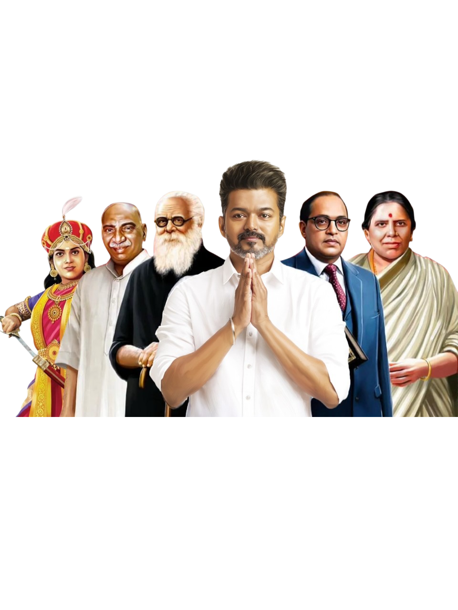

LEADER

Joseph Vijay Chandrasekar
Resident of the Tamilaga Vettri Kazhagam
Joseph Vijay Chandrasekar (born 22 June 1974), known professionally as Vijay, is an Indian actor and politician who works in Tamil cinema. In a career spanning over three decades, he acted in 69 films and is amongst the highest paid actors in India. He is one of the most commercially successful actors in the industry with multiple films amongst the highest-grossing Tamil films of all time. He has won several awards as an actor. Referred to as "Thalapathy" (transl. Commander), he has a significant fan following.
In 2009, Vijay launched his fan club Vijay Makkal Iyakkam. The organisation supported the AIADMK-led alliance in the 2011 Tamil Nadu assembly elections. In February 2019, Vijay voiced his opinion against the Citizenship Amendment Act 2019 passed by the central government, saying that it would disrupt the social religious harmony of the nation.
Members of his fan club contested in the 2022 Tamil Nadu local elections, securing victory in 115 seats. On 2 February 2024, Vijay announced the launch of a new political outfit, Tamilaga Vettri Kazhagam.